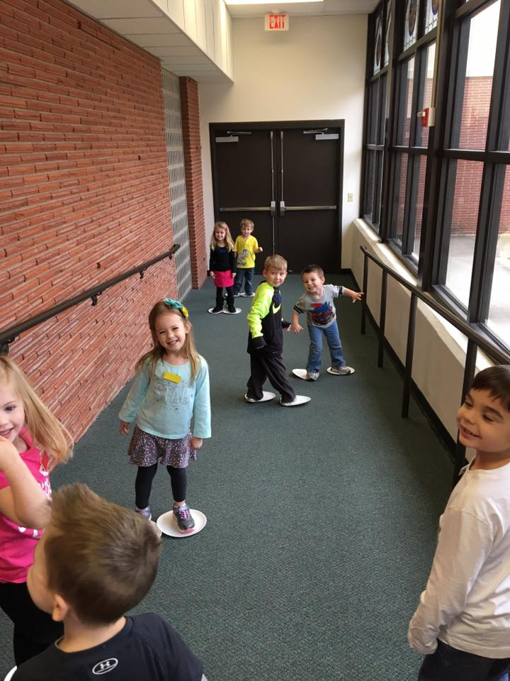
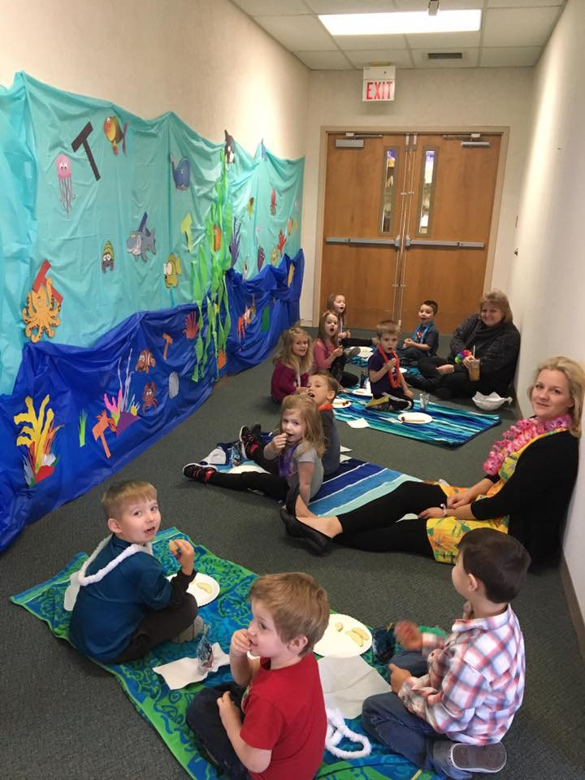
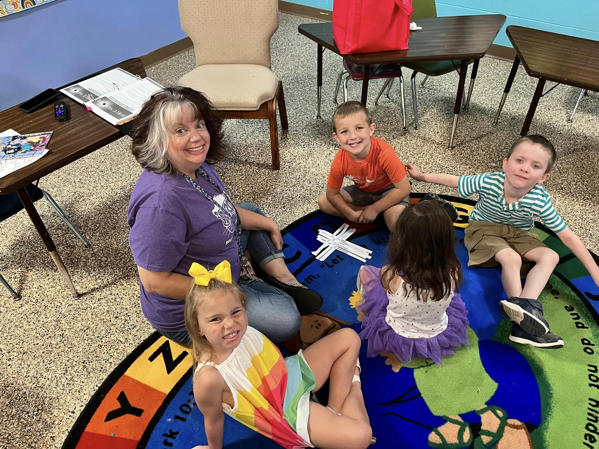

Valley Center Preschool is a non-profit organization that was established in 1975 by members of FUMC Valley Center. Fostering the development of children socially, academically, emotionally, and physically has been the goal since then and while the capacity of the school has grown from around 45 students to 120 students today, the goals remain the same.
Center Time: Many options are available during this time. Some examples include: Playing with blocks, completing puzzles, and science activities are just a few of the options offered.
Group Time: This time is allotted for talking about the current weeks theme, interacting with literature, and even acting out stories.
Music Time: During this time students will listen to, sing, and dance to music.
Snack Time: Pretty self explanatory, however this time is also used to work with students on good table manners.
Story Time: Favorite books are shared with other students at this time.
Outdoor Play: A student favorite that offers the opportunity for social interaction and having a little bit of fun!
3 Year Old Classes: Mon/Wed - Am and PM Sessions Tues/Thur - AM and PM Sessions
4 & 5 Year Old Classes: Mon/Wed/ - AM Sessions Tues/Thur/Fri - AM Sessions Tues/Thur - AM Sessions Mon-Fri - PM Sessions
Tuition: 2 Sessions per week: $100/Month 3 Sessions per week: $130/Month 5 Sessions per week: $200/Month
Enrollment: Enrollment begins in March for the following school year. A $50 enrollment fee is required at the time of enrollment.
Contact: 316-755-4343 vcpreschoolks@gmail.com.